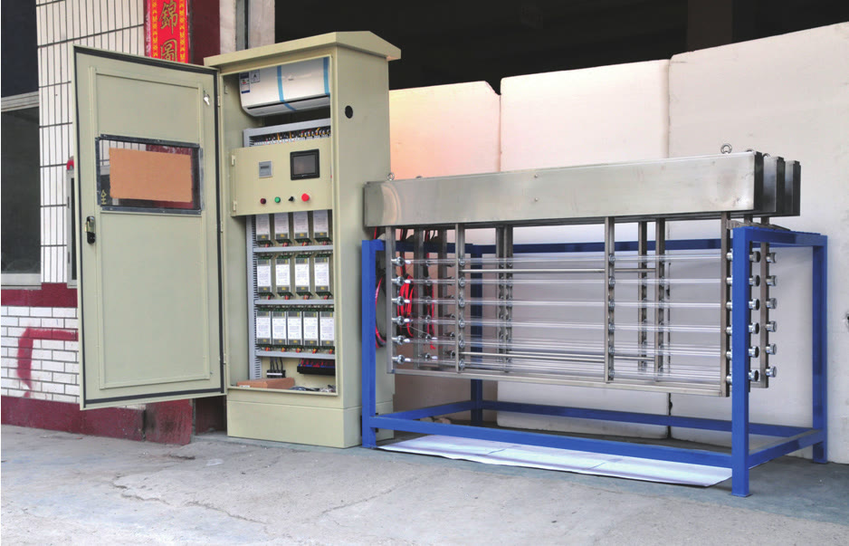

1-year whole-machine warranty from commissioning. Exclusions: membranes, UV lamps, filter cartridges and other consumables. First-tier brand membranes and components and control configuration are selected for your feed-water scenario and quality targets.

KONCHEINDUSTRIAL WATER TREATMENT SYSTEMSMODEL KONCHE KCW · OPEN-CHANNEL UVOPEN CHANNEL316L MODULESPLC CONTROLENGINEERED BY KONCHE · 2026
PRODUCT DOCUMENTATION
KCW open-channel UV systems disinfect wastewater flowing through an open, gravity channel. Ultraviolet modules are mounted in the channel — no pressurized vessel is required — and each 316L stainless module seals its lamps and cables away from the water and UV field.
Three configurations cover small plants to large municipal works: KCW/H standard modules from 2,000 m³/d class, KCW/V vertical-insert modules from 500 m³/d class, and KCW/S compact channels up to 3,000 m³/d. Typical duty: municipal and industrial wastewater effluent, hospital wastewater and storm water, with effluent bacteria targets comparable to Class 1A/1B discharge standards.
KCW/H OPEN-CHANNEL UV — STANDARD MODULES
The standard KCW/H configuration disinfects large municipal flows: corrosion-resistant 316L modules with lamps and signal cables fully sealed inside, imported low-pressure high-output lamps, water-level control, automatic cleaning and per-lamp PLC supervision. Electronic ballasts (power factor ≥0.95) are housed in a separate cabinet for indoor or outdoor installation, and a maintenance crane supports module service.
Parameter
Value
Capacity
From 2,000 m³/d class, multiple modules in parallel
Lamp configuration
320 W lamps, open-channel arrangement
Effluent standard
Comparable to Class 1A / 1B discharge standards
Lamps
Imported low-pressure high-output lamps
Voltage
220 V / 380 V
Working pressure
≤0.8 MPa
Kill rate
99.99% in suitable conditions
Values are reference ranges for the stated conditions, not a project guarantee.
KCW/V VERTICAL-INSERT OPEN-CHANNEL UV
KCW/V uses advanced high-output low-pressure amalgam lamps installed vertically, perpendicular to the flow, each lamp in a high-transmission quartz sleeve. Modules stay mounted in the channel: lamp replacement is safe and quick without lifting the module out of the water. Every lamp is supervised by the PLC, electronic ballasts cut power consumption, and UV sensors plus a wiping system keep the dose stable.
Parameter
Value
Capacity
From 500 m³/d class
Lamp configuration
High-output long-life low-pressure amalgam lamps
Arrangement
Open channel, vertical insert
Control
Per-lamp PLC monitoring and control
Voltage
220 V / 380 V
Working pressure
≤0.8 MPa
Kill rate
99.99% in suitable conditions
Values are reference ranges for the stated conditions, not a project guarantee.
KCW/S COMPACT OPEN-CHANNEL UV
KCW/S brings open-channel UV to smaller duties: an open gravity-flow channel with modules of 4–6 low-pressure high-intensity lamps, constant-power electronic ballasts, UV intensity monitoring with alarm, and manual or mechanical cleaning. Monolithic or split connection styles suit confined civil works.
Parameter
Value
Capacity
Up to 3,000 m³/d
Module
4–6 lamps per module
Arrangement
Open channel, gravity flow
Connection
Monolithic or split
Lamps
Imported low-pressure high-intensity lamps
Voltage
220 V / 380 V
Working pressure
≤0.8 MPa
Kill rate
99.99% in suitable conditions
Values are reference ranges for the stated conditions, not a project guarantee.
UV SYSTEM DESIGN BASIS
Every KCW system is sized case by case. The design basis follows four inputs:
Input
What we verify
Flow
Design flow, average flow and peak flow
Water quality
Suspended solids, turbidity, UV transmittance and bacteria count of the effluent
Lamp selection
Lamp type and quantity against the required dose
Environment
Ambient temperature, humidity and installation requirements
FAQ
Open-channel or closed-vessel UV — which fits wastewater?
Open-channel UV is the standard choice for wastewater effluent flowing in channels; closed-vessel UV suits pressurized pipes and cleaner waters such as process and drinking water.
What effluent quality can KCW reach?
Designed systems reach effluent bacteria targets comparable to Class 1A/1B discharge standards, subject to the verified water quality and dose.
How is maintenance handled?
Automatic wiping keeps sleeves clean in service; modules are serviced in place, and KCW/V allows lamp replacement without lifting the module from the channel.
RELATED SYSTEMS
Continue your system selection.
Linked systems share configuration inputs or process stages with this page.